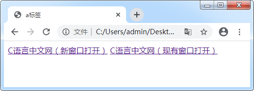

首页 > 编程笔记
HTML <a>标签（超链接）
在 HTML 中，我们使用 <a> 标签来表示超链接。
超链接（Hyperlink）是网页中最常见的元素之一，整个互联网都是基于超链接而构建的。每个网站都由众多的网页组成，超链接使得网页之间不再独立，它就像一根线，把网页连接在一起，形成一个网状结构。互联网之所以能够称之为“网”，就是因为有超链接的存在。
<a> 标签的语法格式如下：
例如，链接到C语言中文网首页可以这样写：
你看，href 本质上就是指向一个文件，这个文件几乎可以是任意格式的。如果浏览器支持这种格式，那么它就可以在浏览器上显示，比如常见的图片、音频、视频等，如果浏览器不支持这种格式，那么就提示用户下载。
另外，href 使用的路径可以是绝对路径，也可以是相对路径。绝对路径往往以域名为起点，例如 http://c.biancheng.net/view/1719.html；相对路径往往以当前文件或者当前域名为起点，例如 ./../uploads/data_package/ComputerFoundation.zip。 后续我们将在《绝对路径与相对路径》一文中详细讲解，这里大家不必深究。
绝大部分情况下，target 属性要么不写，保持默认的 _self，要么把它的值设置为 _blank，在新的窗口中打开链接。例如：
超链接默认是带下划线的，下划线颜色和文本颜色保持一致。 浏览器根据历史记录来判断超链接是否被点击过，如果 <a> 标签的 href 属性和历史记录中的某条 URL 重合，那就说明该链接被点击了，否则是没有被点击的。所以，清空浏览器的历史记录会让超链接的颜色再次变回蓝色。
超链接（Hyperlink）是网页中最常见的元素之一，整个互联网都是基于超链接而构建的。每个网站都由众多的网页组成，超链接使得网页之间不再独立，它就像一根线，把网页连接在一起，形成一个网状结构。互联网之所以能够称之为“网”，就是因为有超链接的存在。
<a> 标签的语法格式如下：
<a href="url" target="opentype">链接文本</a>
其中，href 属性用来指明要跳转到的 url，target 属性用来指明新页面的打开方式，链接文本需要写在 <a> 和 </a> 之间。例如，链接到C语言中文网首页可以这样写：
<a href="http://c.biancheng.net" target="_blank">C语言中文网</a>:链接到C语言中文网里面的一个 HTML 页面可以这样写：
<a href="http://c.biancheng.net/view/7410.html" target="_blank">网站到底是什么</a>下面，我们来详细分析一下 <a> 标签的各个属性。
1. href 属性
href 属性指定链接的目标，也就是要跳转到什么位置。href 可以有多种形式，例如：- href 可以指向一个网页（.html、.php、.jsp、.asp等格式），这也是最常见的形式，例如 href="http://c.biancheng.net/view/1719.html"；
- href 可以指向图片（.jpg、.gif、.png 等格式）、音频（.mp3、.wav等格式）、视频（.mp4、.mkv格式）等媒体文件，例如 href="/uploads/allimg/181221/134I32557-0.jpg"；
- href 可以指向压缩文件（.zip、.rar等格式）、可执行程序（.exe）等，一些下载网站的链接就可以写成这种形式，例如 href="./../uploads/data_package/ComputerFoundation.zip"；
- href 甚至还可以指向本机的文件，只是很少这样使用，例如 href="D:/Program Files/360/360safe/360Safe.exe"。
你看，href 本质上就是指向一个文件，这个文件几乎可以是任意格式的。如果浏览器支持这种格式，那么它就可以在浏览器上显示，比如常见的图片、音频、视频等，如果浏览器不支持这种格式，那么就提示用户下载。
另外，href 使用的路径可以是绝对路径，也可以是相对路径。绝对路径往往以域名为起点，例如 http://c.biancheng.net/view/1719.html；相对路径往往以当前文件或者当前域名为起点，例如 ./../uploads/data_package/ComputerFoundation.zip。 后续我们将在《绝对路径与相对路径》一文中详细讲解，这里大家不必深究。
2. target属性
在创建网页时，默认情况下，超链接在当前的浏览器窗口打开，但是我们可以使用 target 属性来改变目标窗口的打开方式。常见的打开方式如下表所示：| 属性值 | 说明 |
|---|---|
| _self | 默认，在现有的窗口中打开新页面，原窗口将被覆盖。 |
| _blank | 在新的窗口中打开新页面。 |
| _parent | 在当前框架的上一层打开新页面。 |
| _top | 在顶层框架中打开新页面。 |
绝大部分情况下，target 属性要么不写，保持默认的 _self，要么把它的值设置为 _blank，在新的窗口中打开链接。例如：
<!DOCTYPE html> <html lang="en"> <head> <meta charset="UTF-8"> <title>a标签</title> </head> <body> <a href="http://c.biancheng.net/" target="_blank">C语言中文网（新窗口打开）</a> <a href="http://c.biancheng.net/">C语言中文网（现有窗口打开）</a> </body> </html>运行结果如下图所示：

图1： target 窗口打开方式
这两种效果在浏览器预览中看不出来区别，但是当我们点击一下超链接，会发现它们的窗口打开方式是有区别的，请读者自己试一试。
3. <a>标签的默认样式
1) 鼠标样式
当鼠标移入网页上的某个超链接时，其样式会变为一只小手；当鼠标移出超链接区域时，样式会再次回到箭头形状。2) 颜色及下划线
任何 HTML 元素都有默认的样式，<a> 标签也不例外。在浏览器下，超链接被点击后颜色会发生改变：超链接被点击之前是蓝色的，点击之后会变成紫色。超链接默认是带下划线的，下划线颜色和文本颜色保持一致。 浏览器根据历史记录来判断超链接是否被点击过，如果 <a> 标签的 href 属性和历史记录中的某条 URL 重合，那就说明该链接被点击了，否则是没有被点击的。所以，清空浏览器的历史记录会让超链接的颜色再次变回蓝色。
关注公众号「站长严长生」，在手机上阅读所有教程，随时随地都能学习。内含一款搜索神器，免费下载全网书籍和视频。

微信扫码关注公众号